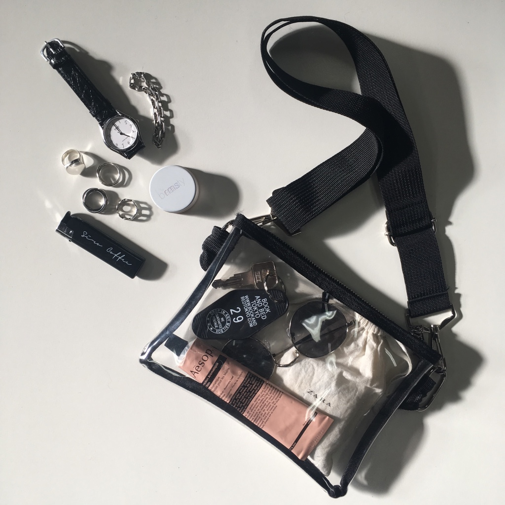
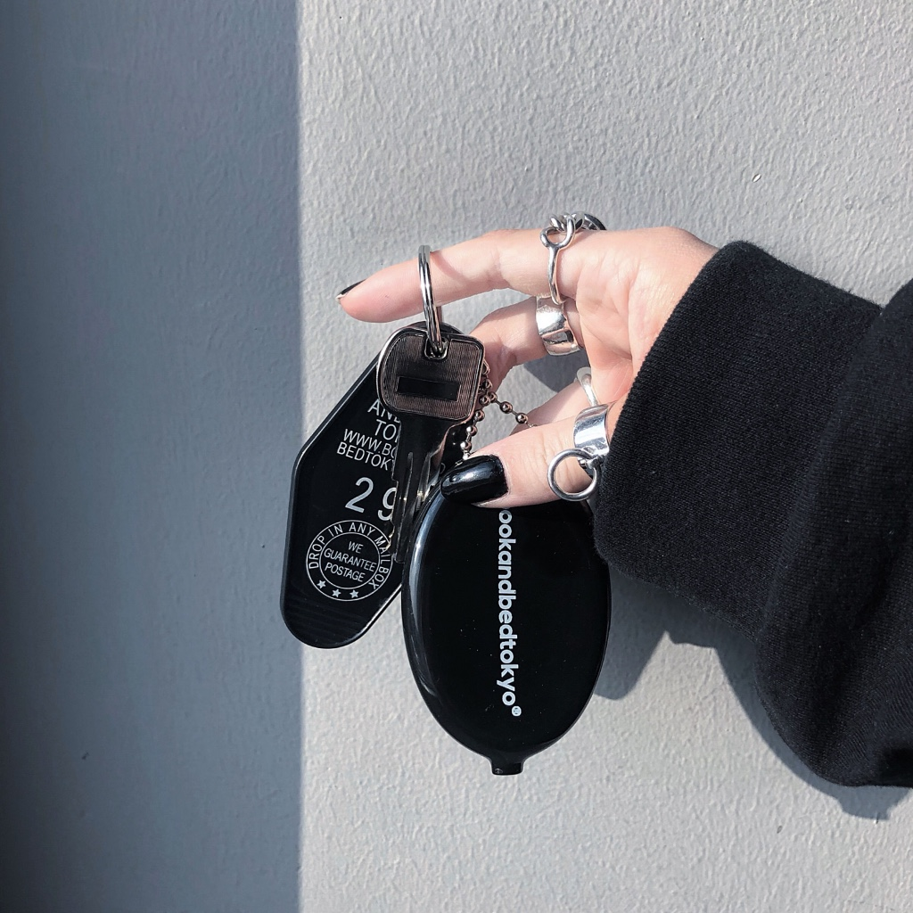
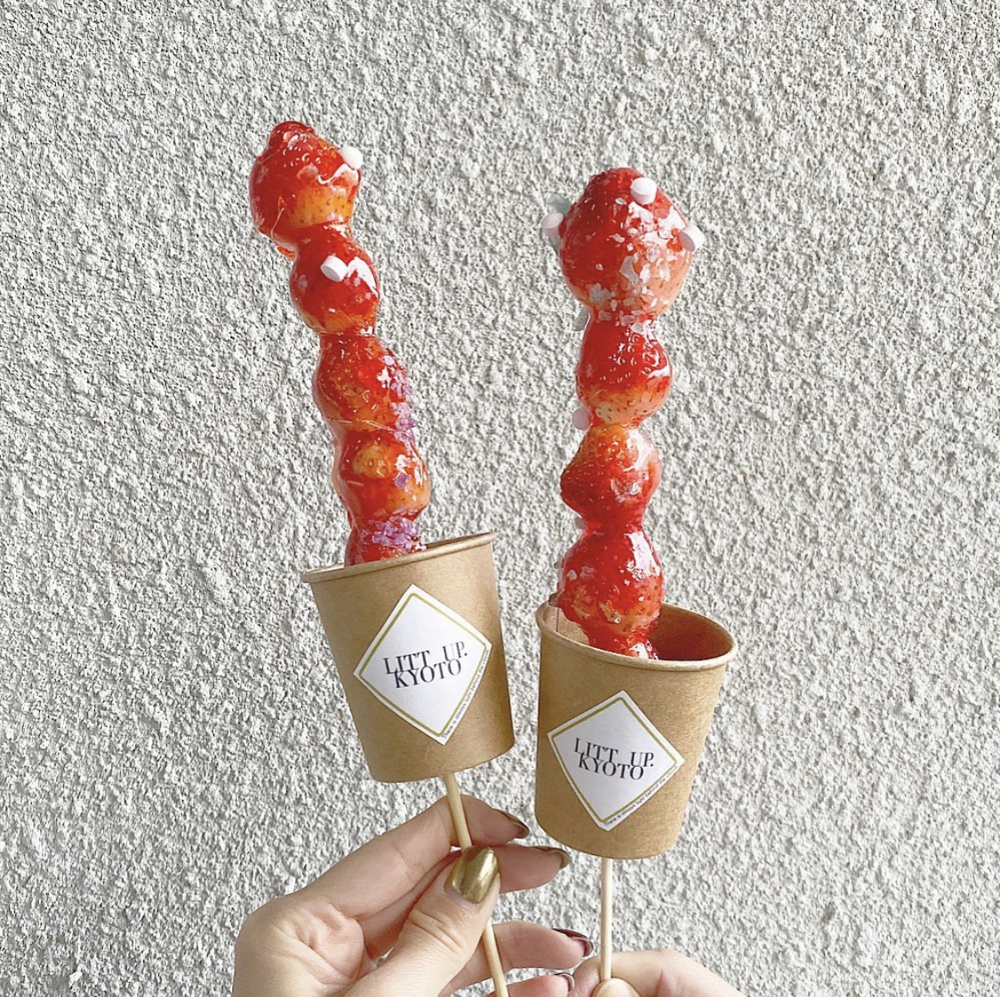

| photo | shopnikoniko |
|  |
webデザイナーとして勤務していたshopnikonikoにて。
写真は当時撮影したクリアバッグですが、
主力商品にしたかったので、インスタグラマー10名にPRしてもらい、
自身でも、どういった用途で使えるかのイメージ撮影や、
スタイリング画像を撮影し、流行に敏感なインスタグラマーがまず、欲しい！
と思ってもらえるページ作りにこだわったところ、投稿やイメージを見たインスタグラマー
がより一層素敵な投稿を拡散して下さり、一週間で1000個売れました！
現在でも看板商品として毎年春夏の時期に出品されています。
|
| photo | bookandbedtokyo |
 |
ホステルのフロント係として就業していたbookandbedtokyo京都店にて。
フロント業務の他に、物販の商品撮影や
カフェの商品撮影など、InstagramでPRも行っていました。
2019年3月に販売したコインケースは個人Instagramで写真投稿の
いいね数415件、保存件数が80件付き、3回再販されました。
|
| photo | litt.up kyoto |
 |
カフェスタッフとして就業していたlitt.up kyotoにて。
カフェスタッフの他に、カフェメニューの商品撮影やスタッフ撮影を担当する
Instagram担当としてPRも行っていました。
去年12月に販売したイチゴ飴は一日100食販売する人気商品
となり、連日長蛇の列でsavyyや関西ウォーカーにも取り上げられました！
|